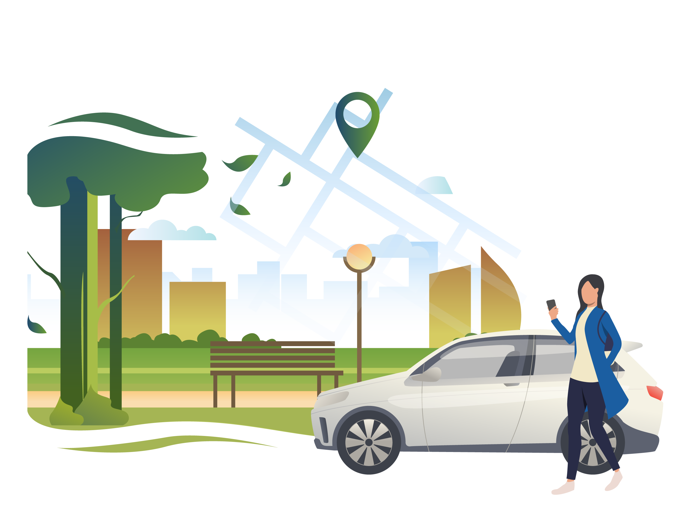

S U S T A I N A B L E M O D E S O F T R A N S P O R T
At GREEN COMMUTE, we believe in creating a greener future by promoting sustainable transportation choices. By reducing reliance on fossil fuel-powered vehicles and adopting eco-friendly alternatives, we can significantly contribute to mitigating climate change, improving air quality, and creating more livable cities.
Explore the sustainable transportation options below and discover how you can make a positive impact on the environment.
Explore the sustainable transportation options below and discover how you can make a positive impact on the environment.
Public Transportation:
Public transportation is a key pillar of sustainable mobility. By utilizing buses, trams, trains, and subways, you can significantly reduce your carbon footprint. Public transit systems are designed to efficiently move large numbers of people, leading to reduced traffic congestion and improved air quality. Plan your trips using our journey planner tool, which provides real-time updates on schedules, routes, and fare information.
Cycling:
Cycling is not only an excellent form of exercise but also an eco-friendly mode of transportation. By choosing to bike instead of driving short distances, you can reduce emissions, improve your health, and enjoy the freedom of two-wheeled travel. Explore bike-sharing services in your area or consider purchasing your own bicycle. We provide resources on cycling safety, bike route maps, and information on local cycling infrastructure.
Walking:
Walking is the most basic and sustainable way to get around. It requires no fuel, produces zero emissions, and has numerous health benefits. Embrace walking for short trips, whether it's for your daily commute, running errands, or exploring your neighborhood. We offer tips on pedestrian safety, walking routes, and the importance of walkable communities.

Electric Vehicles (EVs):
Electric vehicles are revolutionizing the transportation sector by significantly reducing greenhouse gas emissions. EVs produce zero tailpipe emissions and can be charged using renewable energy sources. If you're considering purchasing an electric car, we provide information on available models, charging infrastructure, and incentives to help you make an informed decision. Additionally, explore electric scooter and e-bike options for shorter trips or last-mile connectivity.
Carpooling and Ride-Sharing:
Sharing rides with others through carpooling and ride-sharing services is an effective way to reduce the number of vehicles on the road, ease traffic congestion, and decrease emissions. Our platform connects you with fellow commuters or travelers heading in the same direction, making your journey more economical and environmentally friendly. Find carpooling partners, learn about ride-sharing services, and discover the benefits of shared transportation.

Telecommuting and Flexible Work Arrangements:
With advances in technology, more companies are adopting telecommuting and flexible work arrangements. Working from home or utilizing shared workspaces closer to your residence can significantly reduce the need for daily commuting. Explore resources on remote work options, productivity tips, and the environmental advantages of flexible work arrangements.
Multi-Modal Journeys:
Often, the most efficient and sustainable way to travel involves combining different transportation modes. Our platform allows you to plan multi-modal journeys, seamlessly integrating public transportation, cycling, walking, and other sustainable options. By optimizing your travel plans, you can minimize travel time, reduce costs, and lower your environmental impact.


I N T E L L I G E N T T R A F F I C M A N A G E M E N T
At GREEN COMMUTE, we are committed to revolutionizing the way traffic is managed in our cities and communities. By leveraging cutting-edge technology and data-driven solutions, we aim to create smarter and more efficient transportation systems that improve traffic flow, reduce congestion, and enhance the overall mobility experience.
Explore the key aspects of our intelligent traffic management approach below.
Explore the key aspects of our intelligent traffic management approach below.
Real-Time Traffic Monitoring:
Our intelligent traffic management system utilizes a network of sensors, cameras, and advanced analytics to collect real-time data on traffic conditions. By continuously monitoring the flow of vehicles, we can identify congestion hotspots, detect incidents, and proactively respond to changing traffic patterns. This data serves as the foundation for optimizing traffic operations and making informed decisions to improve overall efficiency.

Adaptive Traffic Signal Control:
Traditional fixed-time traffic signal systems often lead to unnecessary delays and congestion. Our intelligent traffic management system employs adaptive signal control technology that dynamically adjusts signal timings based on real-time traffic conditions. By optimizing signal timings in response to changing traffic volumes, we can reduce waiting times, minimize delays, and improve traffic flow through intersections.
Predictive Analytics and Machine Learning:
Using predictive analytics and machine learning algorithms, our system can anticipate traffic patterns and congestion before they occur. By analyzing historical and real-time data, we can accurately forecast traffic demand, identify potential bottlenecks, and proactively allocate resources to mitigate congestion. This predictive approach allows for better planning, resource optimization, and more effective traffic management strategies.
Incident Management and Emergency Response:
Quick and efficient response to incidents is crucial in minimizing disruptions and ensuring the safety of road users. Our intelligent traffic management system integrates incident detection technology, such as video analytics and automatic incident alerts, enabling authorities to promptly identify and respond to accidents, breakdowns, or other incidents. This real-time information allows for swift emergency response and effective management of traffic diversions.
Integrated Multimodal Transportation:
A comprehensive traffic management system considers all modes of transportation, including cars, public transit, bicycles, and pedestrians. Our intelligent traffic management approach integrates multimodal data and provides real-time information to users across different modes. This allows for seamless coordination and optimization of traffic operations, ensuring a smoother and more connected transportation experience for everyone.
Data Visualization and Reporting:
Our intelligent traffic management system includes intuitive data visualization tools and comprehensive reporting mechanisms. This allows traffic management authorities, city planners, and stakeholders to access and analyze traffic data, performance metrics, and trends. These insights enable evidence-based decision-making, policy formulation, and long-term transportation infrastructure planning.
Sustainable and Smart City Integration:
Intelligent traffic management is a crucial component of building sustainable and smart cities. By optimizing traffic flow, reducing congestion, and improving overall mobility, our system contributes to a more sustainable and livable urban environment. Our solution can integrate with other smart city initiatives, such as smart parking, electric vehicle charging infrastructure, and public transportation systems, to create a holistic and interconnected urban mobility ecosystem.